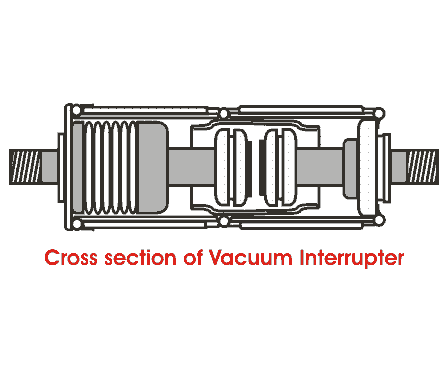

A vacuum circuit breaker is such kind of circuit breaker where the arc quenching takes place in vacuum. The technology is suitable for mainly medium voltage application. For higher voltage vacuum technology has been developed but not commercially viable. The operation of opening and closing of electric current carrying contacts and associated arc interruption take place in a vacuum chamber in the breaker which is called vacuum interrupter. The vacuum interrupter consists of a steel arc chamber in the centre symmetrically arranged ceramic insulators. The vacuum pressure inside a vacuum interrupter is normally maintained at 10 - 6 bar.
The material used for electric current carrying contacts plays an important role in the performance of the vacuum circuit breaker. CuCr is the most ideal material to make VCB contacts. Vacuum interrupter technology was first introduced in the year of 1960. But still it is a developing technology. As time goes on, the size of the vacuum interrupter is being reducing from its early 1960’s size due to different technical developments in this field of engineering. The contact geometry is also improving with time, from butt contact of early days it gradually changes to spiral shape, cup shape and axial magnetic field contact. The vacuum circuit breaker is today recognized as most reliable electric current interruption technology for medium voltage switchgear. It requires minimum maintenance compared to other circuit breaker technologies.
Advantages of Vacuum Circuit Breaker or VCB
Service life of vacuum circuit breaker is much longer than other types of circuit breakers. There is no chance of fire hazard as oil circuit breaker. It is much environment friendly than SF6 Circuit breaker. Beside of that contraction of VCB is much user friendly. Replacement of vacuum interrupter (VI) is much convenient.
Operation of Vacuum Circuit Breaker
The main aim of any circuit breaker is to quench arc during electric current zero crossing, by establishing high dielectric strength in between the contacts so that reestablishment of arc after electric current zero becomes impossible. The dielectric strength of vacuum is eight times greater than that of air and four times greater than that of SF6 gas. This high dielectric strength makes it possible to quench a vacuum arc within very small contact gap. For short contact gap, low contact mass and no compression of medium the drive energy required in vacuum circuit breaker is minimum. When two face to face contact areas are just being separated to each other, they do not be separated instantly, contact area on the contact face is being reduced and ultimately comes to a point and then they are finally de-touched. Although this happens in a fraction of micro second but it is the fact. At this instant of de-touching of contacts in a vacuum, the electric current through the contacts concentrated on that last contact point on the contact surface and makes a hot spot. As it is vacuum, the metal on the contact surface is easily vaporized due to that hot spot and create a conducting media for arc path. Then the arc will be initiated and continued until the next electric current zero.

At electric current zero this vacuum arc is extinguished and the conducting metal vapor is re-condensed on the contact surface. At this point, the contacts are already separated hence there is no question of re-vaporization of contact surface, for next cycle of current. That means, the arc cannot be reestablished again. In this way vacuum circuit breaker prevents the reestablishment of arc by producing high dielectric strength in the contact gap after electric current zero.
There are two types of arc shapes. For interrupting electric current up to 10 kA, the arc remains diffused and the form of vapor discharge and cover the entire contact surface. Above 10 kA the diffused arc is constricted considerably by its own magnetic field and it contracts. The phenomenon gives rise over heating of contact at its center. In order to prevent this, the design of the contacts should be such that the arc does not remain stationary but keeps travelling by its own magnetic field. Specially designed contact shape of vacuum circuit breaker make the constricted stationary arc travel along the surface of the contacts, thereby causing minimum and uniform contact erosion.
 by
by